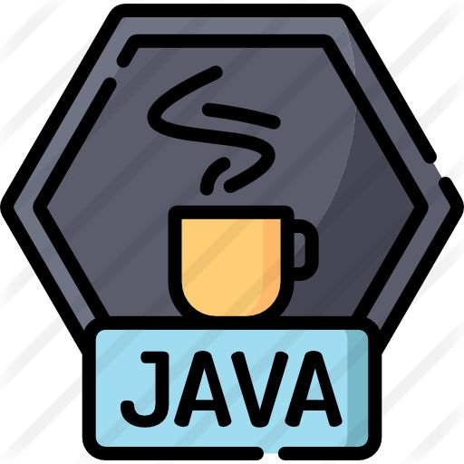
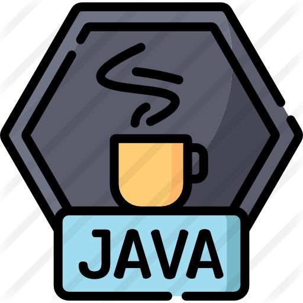

Al-Qassim, Saudi Arabia
Hi, I'm Raydaa
Computer Science student passionate about technology, coding, and solving real-world problems through software. I'm currently learning web development, algorithms, and data structures, and I enjoy building projects that help me grow my skills and knowledge.
The tech I use:
 



Skills
- Data Structures & Algorithms
- Object-Oriented Programming (OOP)
- Operating Systems & Networking
- Databases
Courses
- Artificial Intelligence
Languages
- Arabic (Native)
- English
Projects
Java Library System
Built a Java desktop application with role-based access for users and admins to manage book borrowing, returns, and member records. Integrated PostgreSQL via JDBC and designed the GUI using Java Swing.
Note-Taking iOS App
Developed a feature-rich note-taking application inspired by Notability using Swift and iOS frameworks. Implemented functionalities such as drawing with Apple Pencil, text editing, PDF annotation, and audio recording. Focused on intuitive UI/UX and seamless file management. Collaborated in a team environment and applied best practices in mobile app development.
Algorithm Analysis
Implemented and analyzed naive and dynamic programming solutions for the Longest Common Subsequence problem in Python, highlighting efficiency trade-offs through empirical testing.
Contact Me
Email: Raydaa221@gmail.com
Phone: +966 55 760 90xx
GitHub: rayda2.github.io